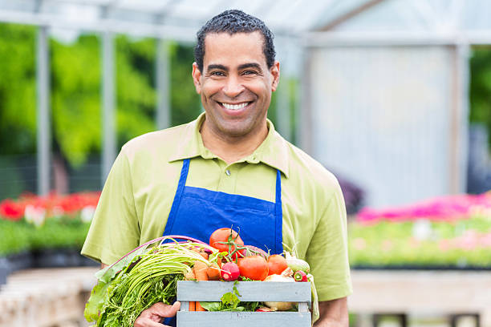
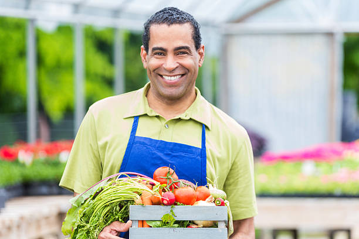

Let's talk about the money...
Without your financial support, we are unable to spread our vital message to the world. Many people are very much unaware of what a balanced diet consists in. Your financial input will allow us to work harder and better at spreading the awareness of the situation. This is the minimum.
Why else should you donate?
If you, too, believe in our message and its importance, you already know why! But if you still need convincing, consider the larger goals we could tackle down the line with your help:
Ensuring a good supply of vegetables to the entire world is no easy task. Growing, handling, and distributing vegetables around the entire world costs a tremendous amount in manpower and is therefore very expensive. With your support, we could help subsidize these efforts and help these healthy and wholesome foods reach into the hands and stomachs of as many people as possible!

 
